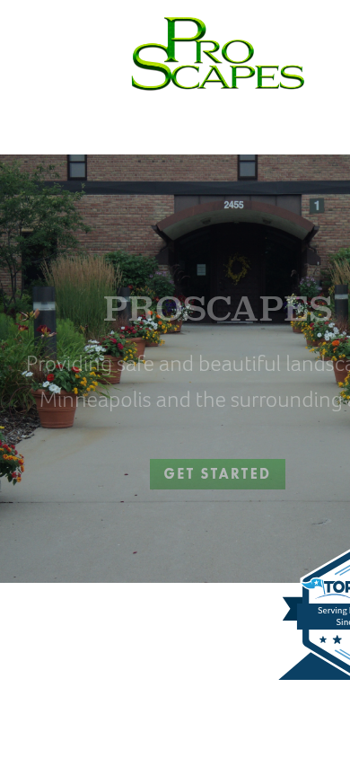
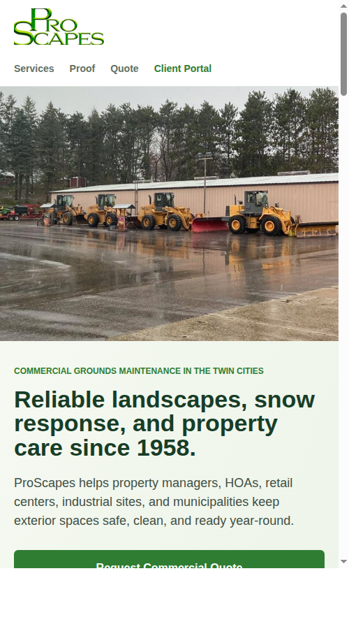

Private redesign concept
ProScapes can look as reliable online as it already appears operationally.
The current site has strong substance: commercial services, snow response, client portal, and service since 1958. The opportunity is to make that trust obvious on mobile and turn it into quote requests.
UX assessment
Mobile issue
Current mobile hero text clips off-screen, weakening the first impression.
Trust buried
Since 1958, 24/7/365, memberships, and client portal are strong but not prioritized.
CTA mismatch
"Get Started" is generic. Property managers need quote, snow/ice, and vendor confidence paths.
Current vs. concept


Focused rebuild offer
- Mobile-first homepage and core service structure.
- Commercial quote path and snow/ice service path.
- Current site stays live until launch approval.
- SSL/mobile cleanup, fast static hosting, and basic SEO structure.
$1,950
focused rebuild concept
optional $149/mo care plan
optional $149/mo care plan